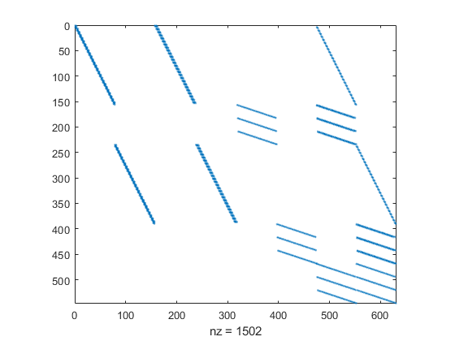

HW 7 Solution - ISE 754 Fall 2019
Contents
Question 1
(a) Unconstrained DC capacity
DCXY = uszip5('XY',mand([20548 26149 36317],uszip5('Code5')));
CXY = uszip5('XY',mand([30669 38339 30732 23830 23154],uszip5('Code5')));
dem = [40 55 35 70 25];
D = dists(DCXY,CXY,'mi');
F = full(sparse(argmin(D),1:size(D,2),dem));
mdisp(F)
TD = sum(sum(F.*D))
F: 1 2 3 4 5
-:--------------------
1: 0 0 0 70 25
2: 0 0 0 0 0
3: 40 55 35 0 0
TD =
4.3046e+04
(b) Constrained DC capacity
sup = [80 80 80];
F = trans(D,sup,dem);
mdisp(F)
TD = sum(sum(F.*D))
F: 1 2 3 4 5
-:--------------------
1: 0 0 0 55 25
2: 0 15 35 15 0
3: 40 40 0 0 0
TD =
5.5114e+04
(c) Constrained lane capacity
IJC = lev2list(D);
IJCU = [IJC repmat(35,size(IJC,1),1)]
s = [sup -dem]
lp = mcnf2lp(IJCU,s);
[x,TC,XFlg,out] = lplog(lp{:}); TC,XFlg,out
f = lp2mcnf(x,IJCU,s);
F = reshape(f,size(D));
mdisp(F)
TD = sum(sum(F.*D))
IJCU =
1.0000 4.0000 494.3776 35.0000
2.0000 4.0000 420.8226 35.0000
3.0000 4.0000 192.9579 35.0000
1.0000 5.0000 685.9578 35.0000
2.0000 5.0000 521.2202 35.0000
3.0000 5.0000 295.9040 35.0000
1.0000 6.0000 519.2360 35.0000
2.0000 6.0000 401.5780 35.0000
3.0000 6.0000 205.3318 35.0000
1.0000 7.0000 130.8135 35.0000
2.0000 7.0000 252.0927 35.0000
3.0000 7.0000 587.9471 35.0000
1.0000 8.0000 108.3849 35.0000
2.0000 8.0000 277.6360 35.0000
3.0000 8.0000 645.5673 35.0000
s =
80 80 80 -40 -55 -35 -70 -25
TC =
5.8211e+04
XFlg =
1
out =
struct with fields:
idxB: [1 20 30 16 22 23 25 26 27 6 3 12 31 32 33 13 11 2 10 5 8 9 19]
r: [10×1 double]
w: [23×1 double]
iter: 23
F: 1 2 3 4 5
-:--------------------
1: 5 0 0 35 25
2: 0 20 25 35 0
3: 35 35 10 0 0
TD =
5.8211e+04
(d) Constrained supplier capacity and unconstrained DC and lane
capacities
SXY = uszip5('XY',mand([28124 27115 37421 27513],uszip5('Code5')));
DS2DC = dists(SXY,DCXY,'mi');
DDC2C = D;
IJC = lev2list(DS2DC,DDC2C)
s = [repmat(60,1,size(SXY,1)) zeros(1,size(DCXY,1)) -dem];
lp = mcnf2lp(IJC,s);
[x,TC,XFlg,out] = lplog(lp{:}); TC,XFlg,out
f = lp2mcnf(x,IJC,s);
IJF = [IJC(:,[1 2]) f(:)];
[FS2DC,FDC2C] = adj2lev(list2adj(IJF),[size(SXY,1) size(DCXY,1) size(CXY,1)]);
mdisp(FS2DC)
mdisp(FDC2C)
IJC =
1.0000 5.0000 304.2874
2.0000 5.0000 260.7372
3.0000 5.0000 520.6931
4.0000 5.0000 234.3006
1.0000 6.0000 282.8247
2.0000 6.0000 235.7245
3.0000 6.0000 388.2559
4.0000 6.0000 277.1106
1.0000 7.0000 387.1087
2.0000 7.0000 426.8403
3.0000 7.0000 234.3984
4.0000 7.0000 475.3527
5.0000 8.0000 494.3776
6.0000 8.0000 420.8226
7.0000 8.0000 192.9579
5.0000 9.0000 685.9578
6.0000 9.0000 521.2202
7.0000 9.0000 295.9040
5.0000 10.0000 519.2360
6.0000 10.0000 401.5780
7.0000 10.0000 205.3318
5.0000 11.0000 130.8135
6.0000 11.0000 252.0927
7.0000 11.0000 587.9471
5.0000 12.0000 108.3849
6.0000 12.0000 277.6360
7.0000 12.0000 645.5673
TC =
1.0779e+05
XFlg =
1
out =
struct with fields:
idxB: [9 10 22 29 11 20 15 21 2 18 4 25]
r: [19×1 double]
w: [12×1 double]
iter: 21
FS2DC: 1 2 3
-----:-----------
1: 0 0 60
2: 35 0 10
3: 0 0 60
4: 60 0 0
FDC2C: 1 2 3 4 5
-----:--------------------
1: 0 0 0 70 25
2: 0 0 0 0 0
3: 40 55 35 0 0
Question 2(b)
Create Network
IJD = [1 -2 14;
1 -6 17;
1 -8 13;
1 -9 1;
1 -10 16;
2 -3 2;
2 -4 6;
2 -7 16;
2 -9 10;
2 -10 7;
3 -4 5;
3 -8 8;
3 -9 9;
4 -5 14;
4 -7 14;
5 -6 7;
5 -7 1;
5 -10 16;
6 -8 19;
6 -10 10;
7 -10 1;
8 -9 10];
Solve
[d,p] = dijkdemo(list2adj(IJD),3,6)
Node: 1 2 3 4 5 6 7 8 9 10
S: 0 0 1* 0 0 0 0 0 0 0
d: Inf Inf 0 Inf Inf Inf Inf Inf Inf Inf
pred: 0 0 0 0 0 0 0 0 0 0
S: 0 1* 1 0 0 0 0 0 0 0
d: Inf 2 0 5 Inf Inf Inf 8 9 Inf
pred: 0 3 0 3 0 0 0 3 3 0
S: 0 1 1 1* 0 0 0 0 0 0
d: 16 2 0 5 Inf Inf 18 8 9 9
pred: 2 3 0 3 0 0 2 3 3 2
S: 0 1 1 1 0 0 0 1* 0 0
d: 16 2 0 5 19 Inf 18 8 9 9
pred: 2 3 0 3 4 0 2 3 3 2
S: 0 1 1 1 0 0 0 1 1* 0
d: 16 2 0 5 19 27 18 8 9 9
pred: 2 3 0 3 4 8 2 3 3 2
S: 0 1 1 1 0 0 0 1 1 1*
d: 10 2 0 5 19 27 18 8 9 9
pred: 9 3 0 3 4 8 2 3 3 2
S: 1* 1 1 1 0 0 0 1 1 1
d: 10 2 0 5 19 19 10 8 9 9
pred: 9 3 0 3 4 10 10 3 3 2
S: 1 1 1 1 0 0 1* 1 1 1
d: 10 2 0 5 19 19 10 8 9 9
pred: 9 3 0 3 4 10 10 3 3 2
S: 1 1 1 1 1* 0 1 1 1 1
d: 10 2 0 5 11 19 10 8 9 9
pred: 9 3 0 3 7 10 10 3 3 2
S: 1 1 1 1 1 1* 1 1 1 1
d: 10 2 0 5 11 18 10 8 9 9
pred: 9 3 0 3 7 5 10 3 3 2
d =
18
p =
3 2 10 7 5 6
Question 3
Convert deg to dec
deg2dec = @(d,m,s) d + m/60 + s/60^2;
XY1 = [-deg2dec(78,42,5) deg2dec(35,46,21);
-deg2dec(80,25,27) deg2dec(37,13,54)]
XY1 =
-78.7014 35.7725
-80.4242 37.2317
Get road network
expansionAroundXY = 0.1;
[XY2,IJD,isXY,isIJD] = subgraph(usrdnode('XY'),...
isinrect(usrdnode('XY'),boundrect(XY1,expansionAroundXY)),...
usrdlink('IJD'));
Label type of road
s = usrdlink(isIJD);
isI = s.Type == 'I';
isIR = isI & s.Urban == ' ';
isIU = isI & ~isIR;
isR = s.Urban == ' ' & ~isI;
isU = ~isI & ~isR;
Add connector roads from cities to road network
[IJD11,IJD12,IJD22] = addconnector(XY1,XY2,IJD);
Convert road distances to travel times (needs to be after
ADDCONNECTOR)
v.IR = 75;
v.IU = 65;
v.R = 50;
v.U = 25;
v.C = 20;
IJT = IJD;
IJT(isIR,3) = IJD(isIR,3)/v.IR;
IJT(isIU,3) = IJD(isIU,3)/v.IU;
IJT(isR,3) = IJD(isR,3)/v.R;
IJT(isU,3) = IJD(isU,3)/v.U;
IJT22 = IJD22;
IJT22(:,3) = IJT(:,3);
IJT12 = IJD12;
IJT12(:,3) = IJD12(:,3)/v.C;
Shortest time routes
n = size(XY1,1);
[T,P] = dijk(list2adj([IJT12; IJT22]),1:n,1:n);
mdisp(T)
T: 1 2
-:------------
1: 0.00 3.76
2: 3.76 0.00
Distance of shortest time route
A = list2adj([IJD12; IJD22]);
D = zeros(n);
for i = 1:n
for j = 1:n
D(i,j) = locTC(pred2path(P,i,j),A);
end
end
mdisp(D)
D: 1 2
-:----------------
1: 0.00 206.76
2: 206.76 0.00
Question 4
Input data
K = [60 50;
55 45;
50 35];
T = 26;
rng(1964)
D = round([gamrnd(6,4,T,1) gamrnd(4,3,T,1)])
Cp = [12 20;
75 130;
35 60];
h = 0.3/(365.25/7)
Ci = cumsum(Cp,1)*h
Cs = [400 600;
90 110;
50 70];
yinit = [0 0;
0 0;
0 sum(D(1:2,2))]
yfinal = zeros(3,2);
k0 = [1 0;
1 0;
1 0];
M = size(K,1);
T = size(D,1);
G = size(K,2);
D =
27 6
15 5
22 8
45 9
28 7
11 4
24 12
42 14
45 21
20 8
18 6
18 13
47 25
27 7
15 5
18 14
27 10
23 9
29 25
12 4
24 13
26 12
33 12
25 19
27 19
16 17
h =
0.0057
Ci =
0.0690 0.1150
0.5002 0.8624
0.7014 1.2074
yinit =
0 0
0 0
0 11
Create MILP model
Cp = reshape(repmat(Cp,[T 1 1]),M,T,G);
Ci = reshape(repmat(Ci,[T+1 1 1]),M,T+1,G);
Ci(:,1,:) = 0
Cs = reshape(repmat(Cs,[T 1 1]),M,T,G);
mp = Milp('PPlan');
mp.addobj('min',Cp,Ci,Cs,zeros(M,T,G))
for g = 1:G
for t = 1:T
for m = 1:M-1
mp.addcstr({[1 -1],{[m m+1],t,g}},{[1 -1],{m,[t t+1],g}},0,0,'=',0)
end
mp.addcstr({M,t,g},{[1 -1],{M,[t t+1],g}},0,0,'=',D(t,g))
for m = 1:M
mp.addcstr({m,t,g},0,0,'<=',{K(m,g),{m,t,g}})
end
end
for m = 1:M
mp.addcstr(0,0,{-1,{m,1,g}},{m,1,g},'<=',k0(m,g))
for t = 2:T
mp.addcstr(0,0,{-1,{m,t,g}},{[1 -1],{m,[t t-1],g}},'<=',0)
end
end
end
for m = 1:M, for t = 1:T, mp.addcstr(0,0,0,{m,t,':'},'=',1), end, end
mp.addlb(0,horzcat(reshape(yinit,M,1,G),zeros(M,T-1,G),reshape(yfinal,M,1,G)),0,0)
mp.addub(Inf,horzcat(reshape(yinit,M,1,G),inf(M,T-1,G),reshape(yfinal,M,1,G)),1,1)
mp.addctype('C','C','B','B')
Ci(:,:,1) =
Columns 1 through 7
0 0.0690 0.0690 0.0690 0.0690 0.0690 0.0690
0 0.5002 0.5002 0.5002 0.5002 0.5002 0.5002
0 0.7014 0.7014 0.7014 0.7014 0.7014 0.7014
Columns 8 through 14
0.0690 0.0690 0.0690 0.0690 0.0690 0.0690 0.0690
0.5002 0.5002 0.5002 0.5002 0.5002 0.5002 0.5002
0.7014 0.7014 0.7014 0.7014 0.7014 0.7014 0.7014
Columns 15 through 21
0.0690 0.0690 0.0690 0.0690 0.0690 0.0690 0.0690
0.5002 0.5002 0.5002 0.5002 0.5002 0.5002 0.5002
0.7014 0.7014 0.7014 0.7014 0.7014 0.7014 0.7014
Columns 22 through 27
0.0690 0.0690 0.0690 0.0690 0.0690 0.0690
0.5002 0.5002 0.5002 0.5002 0.5002 0.5002
0.7014 0.7014 0.7014 0.7014 0.7014 0.7014
Ci(:,:,2) =
Columns 1 through 7
0 0.1150 0.1150 0.1150 0.1150 0.1150 0.1150
0 0.8624 0.8624 0.8624 0.8624 0.8624 0.8624
0 1.2074 1.2074 1.2074 1.2074 1.2074 1.2074
Columns 8 through 14
0.1150 0.1150 0.1150 0.1150 0.1150 0.1150 0.1150
0.8624 0.8624 0.8624 0.8624 0.8624 0.8624 0.8624
1.2074 1.2074 1.2074 1.2074 1.2074 1.2074 1.2074
Columns 15 through 21
0.1150 0.1150 0.1150 0.1150 0.1150 0.1150 0.1150
0.8624 0.8624 0.8624 0.8624 0.8624 0.8624 0.8624
1.2074 1.2074 1.2074 1.2074 1.2074 1.2074 1.2074
Columns 22 through 27
0.1150 0.1150 0.1150 0.1150 0.1150 0.1150
0.8624 0.8624 0.8624 0.8624 0.8624 0.8624
1.2074 1.2074 1.2074 1.2074 1.2074 1.2074
Display contraint matrix
spy(mp.Model.A)

Solve using Gurobi
clear params
model = mp.milp2gb
params.outputflag = 1;
result = gurobi(model, params);
x = mp.namesolution(result.x)
TC = result.objval
model =
struct with fields:
name: 'PPlan'
modelsense: 'minimize'
obj: [630×1 double]
lb: [630×1 double]
ub: [630×1 double]
vtype: 'CCCCCCCCCCCCCCCCCCCCCCCCCCCCCCCCCCCCCCCCCCCCCCCCCCCCCCCCCCCCCCCCCCCCCCCCCCCCCCCCCCCCCCCCCCCCCCCCCCCCCCCCCCCCCCCCCCCCCCCCCCCCCCCCCCCCCCCCCCCCCCCCCCCCCCCCCCCCCCCCCCCCCCCCCCCCCCCCCCCCCCCCCCCCCCCCCCCCCCCCCCCCCCCCCCCCCCCCCCCCCCCCCCCCCCCCCCCCCCCCCCCCCCCCCCCCCCCCCCCCCCCCCCCCCCCCCCCCCCCCCCCCCCCCCCCCCCCCCCCCCCCCCCCCCCCCCCCCCCBBBBBBBBBBBBBBBBBBBBBBBBBBBBBBBBBBBBBBBBBBBBBBBBBBBBBBBBBBBBBBBBBBBBBBBBBBBBBBBBBBBBBBBBBBBBBBBBBBBBBBBBBBBBBBBBBBBBBBBBBBBBBBBBBBBBBBBBBBBBBBBBBBBBBBBBBBBBBBBBBBBBBBBBBBBBBBBBBBBBBBBBBBBBBBBBBBBBBBBBBBBBBBBBBBBBBBBBBBBBBBBBBBBBBBBBBBBBBBBBBBBBBBBBBBBBBBBBBBBBBBBBBBBBBBBBBBBBBBBBBBBBBBBBBBBBBBBBBBBBBBBBBBBBBBBB'
A: [546×630 double]
sense: [546×1 char]
rhs: [546×1 double]
Optimize a model with 546 rows, 630 columns and 1502 nonzeros
Variable types: 318 continuous, 312 integer (312 binary)
Coefficient statistics:
Matrix range [1e+00, 6e+01]
Objective range [1e-08, 6e+02]
Bounds range [1e+00, 1e+01]
RHS range [1e+00, 5e+01]
Presolve removed 121 rows and 135 columns
Presolve time: 0.02s
Presolved: 425 rows, 495 columns, 1232 nonzeros
Variable types: 286 continuous, 209 integer (209 binary)
Root relaxation: objective 1.435310e+05, 488 iterations, 0.00 seconds
Nodes | Current Node | Objective Bounds | Work
Expl Unexpl | Obj Depth IntInf | Incumbent BestBd Gap | It/Node Time
0 0 143531.008 0 78 - 143531.008 - - 0s
0 0 144102.311 0 77 - 144102.311 - - 0s
0 0 144108.896 0 78 - 144108.896 - - 0s
0 0 144363.186 0 82 - 144363.186 - - 0s
0 0 144367.616 0 84 - 144367.616 - - 0s
0 0 144368.537 0 85 - 144368.537 - - 0s
0 0 144368.558 0 85 - 144368.558 - - 0s
0 0 144380.582 0 83 - 144380.582 - - 0s
0 0 144382.797 0 83 - 144382.797 - - 0s
0 0 144383.195 0 83 - 144383.195 - - 0s
0 0 144384.921 0 83 - 144384.921 - - 0s
H 0 0 175552.30719 144384.921 17.8% - 0s
0 0 144384.921 0 81 175552.307 144384.921 17.8% - 0s
0 2 144384.921 0 81 175552.307 144384.921 17.8% - 0s
H 296 224 148413.05298 144778.354 2.45% 25.9 0s
H 297 224 148407.44723 144778.354 2.45% 25.8 0s
* 456 228 48 147386.13881 144944.056 1.66% 23.0 0s
* 688 318 47 147254.01807 145186.495 1.40% 21.8 0s
H 1482 602 147235.90719 145331.246 1.29% 29.8 1s
H 3632 882 147222.97084 146012.619 0.82% 34.1 2s
H 4150 989 147101.70596 146060.815 0.71% 34.3 2s
* 4720 1096 41 147088.25216 146137.231 0.65% 34.3 3s
* 5242 1173 40 147079.82341 146186.724 0.61% 34.2 3s
H 6695 1408 147066.07064 146318.893 0.51% 34.5 4s
9384 1817 146906.220 26 58 147066.071 146474.579 0.40% 33.8 5s
H11306 2041 147039.74949 146539.644 0.34% 33.3 6s
23086 1849 cutoff 23 147039.749 146773.599 0.18% 30.6 10s
H24903 1744 147038.77208 146802.051 0.16% 30.3 11s
Cutting planes:
Gomory: 32
Cover: 4
Implied bound: 7
Clique: 2
MIR: 48
Flow cover: 126
Flow path: 4
Inf proof: 33
Zero half: 1
Explored 30580 nodes (900226 simplex iterations) in 12.74 seconds
Thread count was 8 (of 8 available processors)
Solution count 10: 147039 147040 147066 ... 147386
Optimal solution found (tolerance 1.00e-04)
Best objective 1.470387720752e+05, best bound 1.470387720752e+05, gap 0.0000%
x =
struct with fields:
Cp: [3×26×2 double]
Ci: [3×27×2 double]
Cs: [3×26×2 double]
arg4: [3×26×2 double]
TC =
1.4704e+05
Report results
Fp = x.Cp;
Fi = x.Ci;
Fs = x.Cs;
Fk = x.arg4;
for g = 1:G
mdisp(D(:,g)',[],[],['D' num2str(g)])
mdisp(Fp(:,:,g),[],[],['Fp' num2str(g)])
mdisp(Fi(:,:,g),[],[],['Fi' num2str(g)])
mdisp(Fs(:,:,g),[],[],['Fs' num2str(g)])
mdisp(Fk(:,:,g),[],[],['Fk' num2str(g)])
end
D1: 1 2 3 4 5 6 7 8 9 10 11 12 13 14 15 16 17 18 19 20 21 22 23 24 25 26
--:--------------------------------------------------------------------------------------------------------
1: 27 15 22 45 28 11 24 42 45 20 18 18 47 27 15 18 27 23 29 12 24 26 33 25 27 16
Fp1: 1 2 3 4 5 6 7 8 9 10 11 12 13 14 15 16 17 18 19 20 21 22 23 24 25 26
---:--------------------------------------------------------------------------------------------------------
1: 54 60 0 0 50 50 60 60 60 60 60 0 0 0 0 0 0 0 0 0 50 50 50 0 0 0
2: 27 37 0 50 50 50 0 0 50 50 50 0 0 50 50 50 0 0 0 0 50 50 50 0 0 0
3: 27 37 0 50 50 50 0 0 50 50 50 0 0 50 50 50 0 0 0 0 50 50 50 0 0 0
Fi1: 1 2 3 4 5 6 7 8 9 10 11 12 13 14 15 16 17 18 19 20 21 22 23 24 25 26 27
---:-------------------------------------------------------------------------------------------------------------------
1: 0 27 50 50 0 0 0 60 120 130 140 150 150 150 100 50 0 0 0 0 0 0 0 0 0 0 0
2: 0 0 0 0 0 0 0 0 0 0 0 0 0 0 0 0 0 0 0 0 0 0 0 0 0 0 0
3: 0 0 22 0 5 27 66 42 0 5 35 67 49 2 25 60 92 65 42 13 1 27 51 68 43 16 0
Fs1: 1 2 3 4 5 6 7 8 9 10 11 12 13 14 15 16 17 18 19 20 21 22 23 24 25 26
---:--------------------------------------------------------------------------------------------------------
1: 0 0 0 0 1 0 -0 -0 0 0 0 -0 -0 0 0 -0 -0 0 0 0 1 -0 -0 0 -0 -0
2: 0 0 0 1 0 0 0 0 1 0 0 -0 -0 1 0 -0 0 0 -0 0 1 -0 -0 0 -0 0
3: 0 0 -0 1 0 0 0 -0 1 -0 0 0 0 1 0 -0 -0 0 -0 -0 1 -0 -0 -0 -0 0
Fk1: 1 2 3 4 5 6 7 8 9 10 11 12 13 14 15 16 17 18 19 20 21 22 23 24 25 26
---:--------------------------------------------------------------------------------------------------------
1: 1 1 -0 -0 1 1 1 1 1 1 1 -0 -0 0 0 0 0 0 -0 -0 1 1 1 1 1 1
2: 1 1 -0 1 1 1 -0 -0 1 1 1 -0 0 1 1 1 0 -0 -0 0 1 1 1 -0 0 0
3: 1 1 -0 1 1 1 0 -0 1 1 1 -0 0 1 1 1 -0 -0 -0 0 1 1 1 -0 -0 -0
D2: 1 2 3 4 5 6 7 8 9 10 11 12 13 14 15 16 17 18 19 20 21 22 23 24 25 26
--:--------------------------------------------------------------------------------------------------------
1: 6 5 8 9 7 4 12 14 21 8 6 13 25 7 5 14 10 9 25 4 13 12 12 19 19 17
Fp2: 1 2 3 4 5 6 7 8 9 10 11 12 13 14 15 16 17 18 19 20 21 22 23 24 25 26
---:--------------------------------------------------------------------------------------------------------
1: 0 0 39 50 0 0 0 0 0 0 0 29 35 0 0 0 10 30 50 50 0 0 0 0 0 0
2: 0 0 28 0 0 0 26 35 0 0 0 29 35 0 0 0 10 9 31 35 0 0 0 19 19 17
3: 0 0 28 0 0 0 26 35 0 0 0 29 35 0 0 0 10 9 31 35 0 0 0 19 19 17
Fi2: 1 2 3 4 5 6 7 8 9 10 11 12 13 14 15 16 17 18 19 20 21 22 23 24 25 26 27
---:------------------------------------------------------------------------------------------------------------
1: 0 -0 0 11 61 61 61 35 0 0 0 0 0 0 0 0 0 0 21 40 55 55 55 55 36 17 0
2: 0 0 0 0 0 0 0 0 0 0 0 0 0 0 0 0 0 0 0 0 0 0 0 0 0 0 0
3: 11 5 0 20 11 4 0 14 35 14 6 0 16 26 19 14 0 0 0 6 37 24 12 0 0 0 0
Fs2: 1 2 3 4 5 6 7 8 9 10 11 12 13 14 15 16 17 18 19 20 21 22 23 24 25 26
---:--------------------------------------------------------------------------------------------------------
1: 0 0 1 0 0 -0 -0 -0 -0 0 0 1 -0 0 -0 0 0 -0 -0 -0 -0 -0 -0 -0 0 0
2: 0 0 1 -0 -0 0 1 -0 -0 0 0 1 -0 -0 -0 0 1 -0 0 0 0 -0 0 1 -0 -0
3: 0 0 1 0 0 -0 1 0 -0 -0 0 1 -0 0 0 0 1 0 0 0 -0 0 -0 1 -0 0
Fk2: 1 2 3 4 5 6 7 8 9 10 11 12 13 14 15 16 17 18 19 20 21 22 23 24 25 26
---:--------------------------------------------------------------------------------------------------------
1: 0 0 1 1 0 0 0 0 0 0 0 1 1 1 1 1 1 1 1 1 0 0 0 0 0 0
2: 0 0 1 0 0 0 1 1 0 0 0 1 1 0 0 0 1 1 1 1 0 0 0 1 1 1
3: 0 0 1 0 0 0 1 1 0 0 0 1 1 0 0 0 1 1 1 1 0 0 0 1 1 1
Question 5
Input data
Q = [20; 30];
D = [25 15 10 50 25 15]';
Cp = [200; 800];
Cf = [3000; 9000];
h_ob = 0.05/(2/12)
h = (0.05 + 0.06 + h_ob)/12
Ci = cumsum(Cp + Cf./Q)*h
yinit = [5; 0];
yfinal = [7; 4];
ymax = 30;
M = size(Q,1);
T = size(D,1);
h_ob =
0.3000
h =
0.0342
Ci =
11.9583
49.5417
Create MILP model
Cp = repmat(Cp,1,T)
Ci = repmat(Ci,1,T+1);
Ci(:,1,:) = 0
Cf = repmat(Cf,1,T)
clear mp
mp = Milp('PPlan');
mp.addobj('min',Cp,Ci,Cf)
for t = 1:T
for m = 1:M-1
mp.addcstr({[1 -1],{[m m+1],t}},{[1 -1],{m,[t t+1]}},0,'=',0)
end
mp.addcstr({M,t},{[1 -1],{M,[t t+1]}},0,'=',D(t))
for m = 1:M
mp.addcstr({m,t},0,'<=',{Q(m),{m,t}})
end
end
mp.addlb(0,[yinit zeros(M,T-1) yfinal],0)
mp.addub(Inf,[yinit repmat(ymax,M,T-1) yfinal],2)
mp.addctype('C','C','I')
Cp =
200 200 200 200 200 200
800 800 800 800 800 800
Ci =
0 11.9583 11.9583 11.9583 11.9583 11.9583 11.9583
0 49.5417 49.5417 49.5417 49.5417 49.5417 49.5417
Cf =
3000 3000 3000 3000 3000 3000
9000 9000 9000 9000 9000 9000
Display model
mp.dispmodel
PPlan: lhs C C C C C C C C C C C C C C C C C C C C C C C C C C I I I I I I I I I I I I rhs
-----:-------------------------------------------------------------------------------------------------------------------------------------------------------------------------------------------------------------------
Min: 200 800 200 800 200 800 200 800 200 800 200 800 0.00 0.00 11.96 49.54 11.96 49.54 11.96 49.54 11.96 49.54 11.96 49.54 11.96 49.54 3,000 9,000 3,000 9,000 3,000 9,000 3,000 9,000 3,000 9,000 3,000 9,000
1: 0 1 -1 0 0 0 0 0 0 0 0 0 0 1.00 0.00 -1.00 0.00 0.00 0.00 0.00 0.00 0.00 0.00 0.00 0.00 0.00 0.00 0 0 0 0 0 0 0 0 0 0 0 0 0
2: 25 0 1 0 0 0 0 0 0 0 0 0 0 0.00 1.00 0.00 -1.00 0.00 0.00 0.00 0.00 0.00 0.00 0.00 0.00 0.00 0.00 0 0 0 0 0 0 0 0 0 0 0 0 25
3: -Inf 1 0 0 0 0 0 0 0 0 0 0 0 0.00 0.00 0.00 0.00 0.00 0.00 0.00 0.00 0.00 0.00 0.00 0.00 0.00 0.00 -20 0 0 0 0 0 0 0 0 0 0 0 0
4: -Inf 0 1 0 0 0 0 0 0 0 0 0 0 0.00 0.00 0.00 0.00 0.00 0.00 0.00 0.00 0.00 0.00 0.00 0.00 0.00 0.00 0 -30 0 0 0 0 0 0 0 0 0 0 0
5: 0 0 0 1 -1 0 0 0 0 0 0 0 0 0.00 0.00 1.00 0.00 -1.00 0.00 0.00 0.00 0.00 0.00 0.00 0.00 0.00 0.00 0 0 0 0 0 0 0 0 0 0 0 0 0
6: 15 0 0 0 1 0 0 0 0 0 0 0 0 0.00 0.00 0.00 1.00 0.00 -1.00 0.00 0.00 0.00 0.00 0.00 0.00 0.00 0.00 0 0 0 0 0 0 0 0 0 0 0 0 15
7: -Inf 0 0 1 0 0 0 0 0 0 0 0 0 0.00 0.00 0.00 0.00 0.00 0.00 0.00 0.00 0.00 0.00 0.00 0.00 0.00 0.00 0 0 -20 0 0 0 0 0 0 0 0 0 0
8: -Inf 0 0 0 1 0 0 0 0 0 0 0 0 0.00 0.00 0.00 0.00 0.00 0.00 0.00 0.00 0.00 0.00 0.00 0.00 0.00 0.00 0 0 0 -30 0 0 0 0 0 0 0 0 0
9: 0 0 0 0 0 1 -1 0 0 0 0 0 0 0.00 0.00 0.00 0.00 1.00 0.00 -1.00 0.00 0.00 0.00 0.00 0.00 0.00 0.00 0 0 0 0 0 0 0 0 0 0 0 0 0
10: 10 0 0 0 0 0 1 0 0 0 0 0 0 0.00 0.00 0.00 0.00 0.00 1.00 0.00 -1.00 0.00 0.00 0.00 0.00 0.00 0.00 0 0 0 0 0 0 0 0 0 0 0 0 10
11: -Inf 0 0 0 0 1 0 0 0 0 0 0 0 0.00 0.00 0.00 0.00 0.00 0.00 0.00 0.00 0.00 0.00 0.00 0.00 0.00 0.00 0 0 0 0 -20 0 0 0 0 0 0 0 0
12: -Inf 0 0 0 0 0 1 0 0 0 0 0 0 0.00 0.00 0.00 0.00 0.00 0.00 0.00 0.00 0.00 0.00 0.00 0.00 0.00 0.00 0 0 0 0 0 -30 0 0 0 0 0 0 0
13: 0 0 0 0 0 0 0 1 -1 0 0 0 0 0.00 0.00 0.00 0.00 0.00 0.00 1.00 0.00 -1.00 0.00 0.00 0.00 0.00 0.00 0 0 0 0 0 0 0 0 0 0 0 0 0
14: 50 0 0 0 0 0 0 0 1 0 0 0 0 0.00 0.00 0.00 0.00 0.00 0.00 0.00 1.00 0.00 -1.00 0.00 0.00 0.00 0.00 0 0 0 0 0 0 0 0 0 0 0 0 50
15: -Inf 0 0 0 0 0 0 1 0 0 0 0 0 0.00 0.00 0.00 0.00 0.00 0.00 0.00 0.00 0.00 0.00 0.00 0.00 0.00 0.00 0 0 0 0 0 0 -20 0 0 0 0 0 0
16: -Inf 0 0 0 0 0 0 0 1 0 0 0 0 0.00 0.00 0.00 0.00 0.00 0.00 0.00 0.00 0.00 0.00 0.00 0.00 0.00 0.00 0 0 0 0 0 0 0 -30 0 0 0 0 0
17: 0 0 0 0 0 0 0 0 0 1 -1 0 0 0.00 0.00 0.00 0.00 0.00 0.00 0.00 0.00 1.00 0.00 -1.00 0.00 0.00 0.00 0 0 0 0 0 0 0 0 0 0 0 0 0
18: 25 0 0 0 0 0 0 0 0 0 1 0 0 0.00 0.00 0.00 0.00 0.00 0.00 0.00 0.00 0.00 1.00 0.00 -1.00 0.00 0.00 0 0 0 0 0 0 0 0 0 0 0 0 25
19: -Inf 0 0 0 0 0 0 0 0 1 0 0 0 0.00 0.00 0.00 0.00 0.00 0.00 0.00 0.00 0.00 0.00 0.00 0.00 0.00 0.00 0 0 0 0 0 0 0 0 -20 0 0 0 0
20: -Inf 0 0 0 0 0 0 0 0 0 1 0 0 0.00 0.00 0.00 0.00 0.00 0.00 0.00 0.00 0.00 0.00 0.00 0.00 0.00 0.00 0 0 0 0 0 0 0 0 0 -30 0 0 0
21: 0 0 0 0 0 0 0 0 0 0 0 1 -1 0.00 0.00 0.00 0.00 0.00 0.00 0.00 0.00 0.00 0.00 1.00 0.00 -1.00 0.00 0 0 0 0 0 0 0 0 0 0 0 0 0
22: 15 0 0 0 0 0 0 0 0 0 0 0 1 0.00 0.00 0.00 0.00 0.00 0.00 0.00 0.00 0.00 0.00 0.00 1.00 0.00 -1.00 0 0 0 0 0 0 0 0 0 0 0 0 15
23: -Inf 0 0 0 0 0 0 0 0 0 0 1 0 0.00 0.00 0.00 0.00 0.00 0.00 0.00 0.00 0.00 0.00 0.00 0.00 0.00 0.00 0 0 0 0 0 0 0 0 0 0 -20 0 0
24: -Inf 0 0 0 0 0 0 0 0 0 0 0 1 0.00 0.00 0.00 0.00 0.00 0.00 0.00 0.00 0.00 0.00 0.00 0.00 0.00 0.00 0 0 0 0 0 0 0 0 0 0 0 -30 0
lb: 0 0 0 0 0 0 0 0 0 0 0 0 5.00 0.00 0.00 0.00 0.00 0.00 0.00 0.00 0.00 0.00 0.00 0.00 7.00 4.00 0 0 0 0 0 0 0 0 0 0 0 0
ub: Inf Inf Inf Inf Inf Inf Inf Inf Inf Inf Inf Inf 5.00 0.00 30.00 30.00 30.00 30.00 30.00 30.00 30.00 30.00 30.00 30.00 7.00 4.00 2 2 2 2 2 2 2 2 2 2 2 2
Solve using INTLINPROG
ilp = mp.milp2ilp;
[x,TC,exitflag,output] = intlinprog(ilp{:});
TC,output
x = mp.namesolution(x);
LP: Optimal objective value is 210149.166667.
Heuristics: Found 2 solutions using rounding.
Upper bound is 231664.625000.
Relative gap is 7.08%.
Heuristics: Found 1 solution using rounding.
Upper bound is 226071.208333.
Relative gap is 4.78%.
Heuristics: Found 1 solution using rounding.
Upper bound is 226071.208333.
Relative gap is 4.78%.
Cut Generation: Applied 8 Gomory cuts, and 19 mir cuts.
Lower bound is 215254.044198.
Relative gap is 4.78%.
Heuristics: Found 2 solutions using rounding,
and 1 solution using total rounding.
Upper bound is 216806.416667.
Relative gap is 0.72%.
Heuristics: Found 1 solution using rounding,
and 1 solution using rss.
Upper bound is 216531.375000.
Relative gap is 0.59%.
Cut Generation: Applied 1 Gomory cut.
Lower bound is 215403.893984.
Relative gap is 0.52%.
Branch and Bound:
nodes total num int integer relative
explored time (s) solution fval gap (%)
17 0.03 9 2.165314e+05 0.000000e+00
Optimal solution found.
Intlinprog stopped because the objective value is within a gap tolerance of the
optimal value, options.AbsoluteGapTolerance = 0 (the default value). The intcon
variables are integer within tolerance, options.IntegerTolerance = 1e-05 (the
default value).
TC =
2.1653e+05
output =
struct with fields:
relativegap: 0
absolutegap: 0
numfeaspoints: 9
numnodes: 17
constrviolation: 1.7764e-14
message: 'Optimal solution found.↵↵Intlinprog stopped because the objective value is within a gap tolerance of the optimal value, options.AbsoluteGapTolerance = 0 (the default value). The intcon variables are integer within tolerance, options.IntegerTolerance = 1e-05 (the default value).'
Report results
Fp = x.Cp; mdisp(Fp)
Fi = x.Ci; mdisp(Fi)
Ff = x.Cf; mdisp(Ff)
TCp = sum(sum(Cp.*Fp));
TCi = sum(sum(Ci.*Fi));
TCf = sum(sum(Cf.*Ff));
vdisp('TCp,TCi,TCf,TC')
Fp: 1 2 3 4 5 6
--:-----------------------
1: 20 29 20 40 37 0
2: 25 29 0 60 30 0
Fi: 1 2 3 4 5 6 7
--:--------------------------
1: 5 0 0 20 0 7 7
2: 0 -0 14 4 14 19 4
Ff: 1 2 3 4 5 6
--:--------------------
1: 1 2 1 2 2 -0
2: 1 1 -0 2 1 -0
: TCp TCi TCf TC
-:---------------------------------------
1: 144,400 3,131.38 69,000 216,531.38